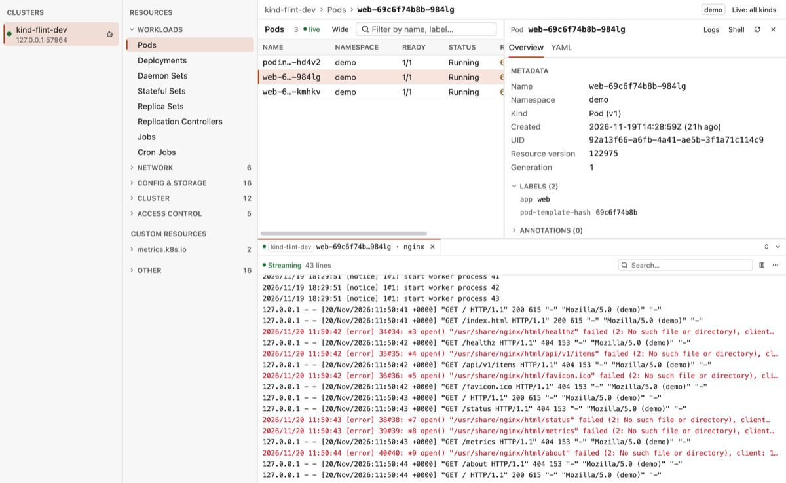
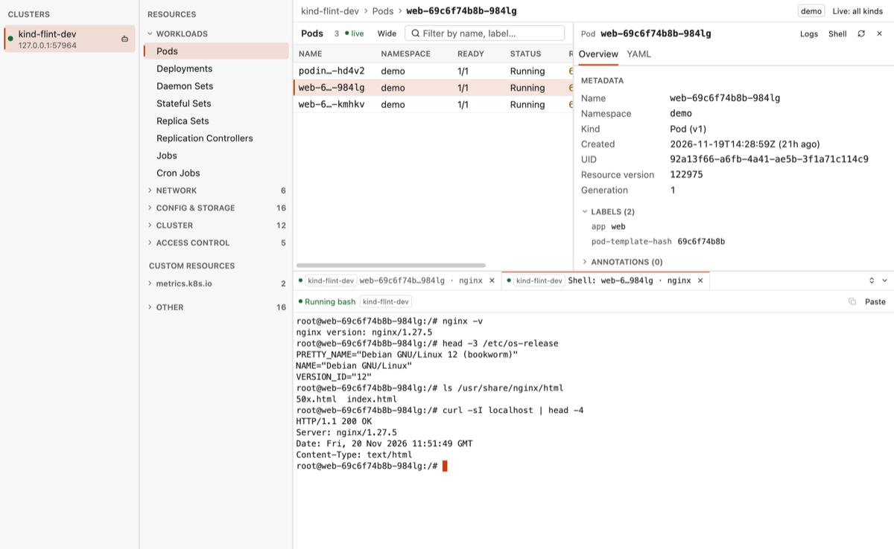

Pod and workload logs
Logs open in a bottom dock from a row, the detail pane or the keyboard. Follow, search, timestamps, previous logs, and save to a file. A workload's tab follows its pods as they come and go.

Early development · open source
Flint is a fast, native Kubernetes app for your Mac. Open several clusters together, save them as a cluster set with a dashboard that shows the unhealthiest first, keep them watched in the background, and get a desktop alert when one gets a new problem.
Prefer to let an AI agent read your clusters? Flint also ships a read-only MCP server.
The latest release includes Flint.app in a universal macOS DMG for Apple Silicon and Intel and best-effort Linux AppImages (x86_64 and arm64). The Mac app uses an ad-hoc signature, so macOS asks you to allow it on first launch after a browser download (install steps).
An illustration of the window, not a screenshot.
Logs open in a bottom dock from a row, the detail pane or the keyboard. Follow, search, timestamps, previous logs, and save to a file. A workload's tab follows its pods as they come and go.

An interactive terminal tab in the same dock, for any container that ships bash or
/bin/sh (distroless images have neither). A container picker handles multi-container pods,
and tabs keep running while you browse other views.

Navigation comes from the cluster's own discovery, so custom resources show up next to Pods and
Deployments with the same columns kubectl get prints.
Lists update as the cluster changes, with a namespace and text filter. Watch every kind on the active cluster, or only the ones you are looking at. Even then, the selected cluster and open set members still get problem detection, and a pod Pending for five minutes counts as a problem.
Metadata, conditions and events for any object, plus its YAML. Secret values are redacted.
Flint reads kubeconfig the way kubectl does and never writes to it. It connects to nothing
until you pick a cluster.
On a test cluster with 62 kinds watched, the open lists synced in about 120 ms. Laying out a 10,000-row list takes about half a millisecond per frame.
Choose two to five clusters, then Open Together for one combined list, or save them as a cluster set with a dashboard that shows the unhealthiest cluster first. Keep Watching, in a cluster's row menu, gathers problems in the background. The home screen on launch shows each kept cluster's health at a glance, and a fleet action (restart, scale, apply YAML or delete) can run across a set, one cluster at a time.
With metrics-server, pod, node and workload lists draw CPU and memory as bars against the row's request and limit, and the detail pane shows rings. Cluster overviews show sparklines over a metrics history of 1 to 24 hours, kept in memory while Flint watches the cluster.
Toggle Problems Only shows just the rows with problems. Desktop notifications for new problems on watched clusters are off by default and need Flint.app.
Forward Port opens a local port to a pod or service, and Show Port Forwards lists them. Show Helm Releases reads releases, with a failed release's reason from Helm. On an exec-plugin cluster, turn on Keep Watching and its background sign-in first; auth-provider clusters are not supported. Log search can be a regular expression (⌥⌘R). Clusters behind an HTTP or SOCKS5 proxy connect through it, and Settings > Network applies a proxy without a restart.
Flint Light and Flint Dark switch with the system appearance, or set one yourself. A command palette (⇧⌘P) runs any action by name.
Flint also ships flint mcp, a read-only Model Context Protocol
server. Agents can list clusters, kinds, objects, events and pod logs, and nothing else.
[REDACTED:password]. Flint's own log view is unchanged.Redaction is pattern matching and can miss a credential in an unusual format, and ConfigMaps and env values are sent as the cluster returns them. Expose only clusters you are willing to send to your AI provider.
# link the app's binary once (DMG install)
sudo mkdir -p /usr/local/bin
sudo ln -sf /Applications/Flint.app/Contents/MacOS/flint /usr/local/bin/flint
# register it with Claude Code
claude mcp add flint -- /usr/local/bin/flint mcp
# other MCP clients need the absolute path
/usr/local/bin/flint mcp| Flint | Lens MCP Server | kubernetes-mcp-server | |
|---|---|---|---|
| Which clusters | Only those you expose, one by one, each tied to its API server URL | Every cluster Lens knows | The contexts in its kubeconfig |
| Writes | None: no tools for them | Its kubectl tool refuses writes; editors and Helm dialogs it fills in apply changes after you confirm; some tools change Lens itself (port forwards, settings) | Writes allowed, including delete and pod exec, unless its read_only or disable_destructive setting is on |
| Credential redaction in results | Secret values, and credentials in logs, events, messages and container arguments | Not described | Not for tool results (only its own log notifications); Secrets can be denied by configuration |
As their documentation describes them in November 2026.